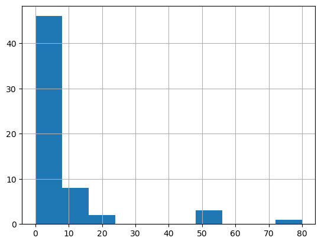

from pathlib import PathThis is my follow up to Lesson 5: Practical Deep Learning for Coders 2022 in which Jeremy builds a linear regresson model and neural net from scratch using Python.
Aim of the project
The aim of this project is :
- to build a linear and neural network model from scratch within Python that predicts whether a dino is a meat-eater or a vegetarian
Data source
I created my own dataset in Excel from my son’s favourite dino book.
Set path
Install required packages
We’ll be using NumPy and Pytorch for array calculations in this notebook, and pandas for working with tabular data, so we’ll import them and set them to display using a bit more space than they default to.
import os
import torch, numpy as np, pandas as pd
np.set_printoptions(linewidth=140)
torch.set_printoptions(linewidth=140, sci_mode=False, edgeitems=7)
pd.set_option('display.width', 140)Loading the data
The starting point for this project is the csv file that I created as part of my Lesson 3 project to build a linear model and neural network from scratch within Excel. See my earlier post titled Excelosaurus.
The data is in the form of a table, as a Comma Separated Values (CSV) file. We can open it using the pandas library, which will create a DataFrame.
# Set the path and load in the spreadsheet
from pathlib import Path
dinos = pd.read_csv('Data/Dinos.csv')Exploratory data analysis
We can automate some of the exploratory data analysis by writing a function:
def initial_eda(df):
if isinstance(df, pd.DataFrame):
total_na = df.isna().sum().sum()
print("Dimensions : %d rows, %d columns" % (df.shape[0], df.shape[1]))
print("Total NA Values : %d " % (total_na))
print("%38s %10s %10s %10s" % ("Column Name", "Data Type", "#Distinct", "NA Values"))
col_name = df.columns
dtyp = df.dtypes
uniq = df.nunique()
na_val = df.isna().sum()
for i in range(len(df.columns)):
print("%38s %10s %10s %10s" % (col_name[i], dtyp[i], uniq[i], na_val[i]))
else:
print("Expect a DataFrame but got a %15s" % (type(df)))initial_eda(dinos)Dimensions : 60 rows, 10 columns
Total NA Values : 0
Column Name Data Type #Distinct NA Values
Name object 60 0
Period object 3 0
Discovered object 8 0
Min_Len float64 21 0
Max_Len float64 22 0
Min_Height float64 15 0
Max_Height float64 15 0
Min_Weight float64 29 0
Max_weight float64 27 0
Meat int64 2 0As we can see there are no missing values, amd the dataset includes:
- 60 rows, each representing a unique dinosaur, and
- 10 columns, representing 9 features and the target variable.
Note that the Period and Discovered columns are of data type object. We will deal with these later in the section on Categorical Features. The other columnns are numeric (float64 or int64).
Straight off the bat, we can safely drop the *Name” column as the dino name is clearly not an indicator of whether it is a meat eater or a plant eater:
dinos = dinos.drop(['Name'], axis=1);dinos['Meat'].value_counts()1 36
0 24
Name: Meat, dtype: int64- There are two possible prediction outputs so this is a binary classification problem. It’s a small dataset but reasonably balanced; 36 meat-eating dinos [indexed 1] and 24 veggies [indexed 0].
Numeric features
Here’s how we get a quick summary of all the numeric columns in the dataset:
import numpy as np
dinos.describe(include=(np.number))| Min_Len | Max_Len | Min_Height | Max_Height | Min_Weight | Max_weight | Meat | |
|---|---|---|---|---|---|---|---|
| count | 60.000000 | 60.000000 | 60.000000 | 60.000000 | 60.000000 | 60.000000 | 60.000000 |
| mean | 8.480000 | 9.015000 | 2.788333 | 3.075000 | 6.666750 | 7.333992 | 0.600000 |
| std | 7.152356 | 7.757661 | 2.548518 | 2.754326 | 13.310511 | 14.709908 | 0.494032 |
| min | 0.300000 | 0.400000 | 0.000000 | 0.000000 | 0.000500 | 0.000500 | 0.000000 |
| 25% | 3.750000 | 4.500000 | 1.000000 | 1.000000 | 0.175000 | 0.175000 | 0.000000 |
| 50% | 6.500000 | 7.000000 | 2.000000 | 2.750000 | 2.500000 | 3.000000 | 1.000000 |
| 75% | 10.250000 | 11.000000 | 4.000000 | 4.000000 | 7.000000 | 8.000000 | 1.000000 |
| max | 35.000000 | 40.000000 | 14.000000 | 14.000000 | 70.000000 | 80.000000 | 1.000000 |
- We need to watch out for dominant features as these can cause problems for our model, because once that column is multiplied by a coefficient later, the few rows with really big values will strongly influence the result.
- Min_Weight and Max_Weight contain mainly values of around 0.0005 to 8, but there are a few much bigger ones.
Let’s illustrate this visually using a histogram :
Histogram of Max_weight
dinos ['Max_weight'].hist();
Feature engineering
As you can see the distribution is long-tailed which linear models don’t like. To fix this, the most common approach is to take the logarithm, which squishes the big numbers and makes the distribution more reasonable:
# Note that the log of zero will return NaN (not a number) so the workaround is to include +1
dinos['Max_weight'] = np.log(dinos['Max_weight']+1)The histogram now shows a more even distribution of values without the long tail:
dinos ['Max_weight'].hist()<AxesSubplot: >
Let’s do the same for Min_Weight :
dinos['Min_Weight'] = np.log(dinos['Min_Weight']+1)
dinos ['Min_Weight'].hist()<AxesSubplot: >Categorical features
Here’s how we get a quick summary of all the non-numeric columns in the dataset:
dinos.describe(include=[object])| Period | Discovered | |
|---|---|---|
| count | 60 | 60 |
| unique | 3 | 8 |
| top | Cretaceous | North America |
| freq | 41 | 36 |
dinos.tail(5)| Period | Discovered | Min_Len | Max_Len | Min_Height | Max_Height | Min_Weight | Max_weight | Meat | |
|---|---|---|---|---|---|---|---|---|---|
| 55 | Cretaceous | Africa | 12.0 | 12.0 | 1.5 | 1.5 | 2.197225 | 2.197225 | 1 |
| 56 | Cretaceous | North America | 11.0 | 11.0 | 1.5 | 1.5 | 2.302585 | 2.302585 | 1 |
| 57 | Jurassic | Europe | 0.3 | 0.4 | 0.2 | 0.2 | 0.001000 | 0.001000 | 1 |
| 58 | Triassic | Europe | 5.0 | 6.0 | 2.0 | 3.0 | 0.470004 | 0.470004 | 1 |
| 59 | Triassic | Europe | 4.0 | 5.0 | 3.0 | 3.0 | 2.302585 | 2.302585 | 0 |
As you can see from the above our data includes the following categorical data -
- the period when the dinos lived (Cretaceous, Jurassic, Triassic)
- the place of discovery (Africa, North America, Europe etc.)
Clearly we can’t multiply strings like Jurassic or Africa by coefficients, so we need to replace those with numbers.
We do that by creating new columns containing dummy variables. A dummy variable is a column that contains a 1 where a particular column contains a particular value, or a 0 otherwise. For instance, we could create a dummy variable for Period = ‘Cretaceous’, which would be a new column containing 1 for rows where Period is ‘Cretaceous’, and 0 for rows where it isn’t, and apply the same logic for the ‘Discovered’ values.
Pandas can create these automatically using get_dummies, which also remove the original columns. We’ll create dummy variables for Period and Discovered
dinos = pd.get_dummies(dinos, columns=["Period","Discovered"])
dinos.columnsIndex(['Min_Len', 'Max_Len', 'Min_Height', 'Max_Height', 'Min_Weight', 'Max_weight', 'Meat', 'Period_Cretaceous', 'Period_Jurassic',
'Period_Triassic', 'Discovered_Africa', 'Discovered_Antartica', 'Discovered_Asia', 'Discovered_Australia', 'Discovered_Europe',
'Discovered_North America', 'Discovered_South America', 'Discovered_UK'],
dtype='object')We can see that columns have been added to the end – one for each of the possible values for Period and Discovered, and that the original Period and Discovered columns have been removed.
Here’s what the first few rows of those newly added columns look like:
added_cols = ['Period_Cretaceous', 'Period_Jurassic',
'Period_Triassic', 'Discovered_Africa', 'Discovered_Antartica', 'Discovered_Asia', 'Discovered_Australia', 'Discovered_Europe',
'Discovered_North America', 'Discovered_South America', 'Discovered_UK']
dinos[added_cols].head()| Period_Cretaceous | Period_Jurassic | Period_Triassic | Discovered_Africa | Discovered_Antartica | Discovered_Asia | Discovered_Australia | Discovered_Europe | Discovered_North America | Discovered_South America | Discovered_UK | |
|---|---|---|---|---|---|---|---|---|---|---|---|
| 0 | 1 | 0 | 0 | 0 | 0 | 0 | 0 | 0 | 0 | 1 | 0 |
| 1 | 0 | 1 | 0 | 0 | 0 | 0 | 0 | 0 | 1 | 0 | 0 |
| 2 | 1 | 0 | 0 | 0 | 0 | 0 | 0 | 0 | 1 | 0 | 0 |
| 3 | 0 | 1 | 0 | 0 | 0 | 0 | 0 | 0 | 1 | 0 | 0 |
| 4 | 1 | 0 | 0 | 0 | 0 | 0 | 0 | 0 | 1 | 0 | 0 |
Let’s review our dataset now following the changes prior to building a model:
initial_eda(dinos)Dimensions : 60 rows, 18 columns
Total NA Values : 0
Column Name Data Type #Distinct NA Values
Min_Len float64 21 0
Max_Len float64 22 0
Min_Height float64 15 0
Max_Height float64 15 0
Min_Weight float64 29 0
Max_weight float64 27 0
Meat int64 2 0
Period_Cretaceous uint8 2 0
Period_Jurassic uint8 2 0
Period_Triassic uint8 2 0
Discovered_Africa uint8 2 0
Discovered_Antartica uint8 2 0
Discovered_Asia uint8 2 0
Discovered_Australia uint8 2 0
Discovered_Europe uint8 2 0
Discovered_North America uint8 2 0
Discovered_South America uint8 2 0
Discovered_UK uint8 2 0Create our independent(predictors) and dependent(target) variables
- They both need to be PyTorch tensors. Our dependent variable is Meat :
from torch import tensor
t_dep = tensor(dinos.Meat)- Our independent variables are all the continuous variables of interest plus all the dummy variables we created earlier:
indep_cols = ["Min_Len","Max_Len","Min_Height","Max_Height","Min_Weight","Max_weight"] + added_cols
t_indep = tensor(dinos[indep_cols].values, dtype=torch.float)
t_indeptensor([[ 35.0000, 40.0000, 11.0000, 11.0000, 4.2627, 4.3944, 1.0000, ..., 0.0000, 0.0000, 0.0000,
0.0000, 0.0000, 1.0000, 0.0000],
[ 25.0000, 30.0000, 10.0000, 12.0000, 3.9318, 3.9318, 0.0000, ..., 0.0000, 0.0000, 0.0000,
0.0000, 1.0000, 0.0000, 0.0000],
[ 30.0000, 30.0000, 5.0000, 6.0000, 2.4849, 2.5649, 1.0000, ..., 0.0000, 0.0000, 0.0000,
0.0000, 1.0000, 0.0000, 0.0000],
[ 20.0000, 22.0000, 5.0000, 6.0000, 3.0445, 3.1781, 0.0000, ..., 0.0000, 0.0000, 0.0000,
0.0000, 1.0000, 0.0000, 0.0000],
[ 25.0000, 25.0000, 14.0000, 14.0000, 3.9318, 3.9318, 1.0000, ..., 0.0000, 0.0000, 0.0000,
0.0000, 1.0000, 0.0000, 0.0000],
[ 7.0000, 7.0000, 2.5000, 2.5000, 1.3863, 1.3863, 1.0000, ..., 0.0000, 0.0000, 0.0000,
0.0000, 1.0000, 0.0000, 0.0000],
[ 12.0000, 12.0000, 4.0000, 4.0000, 1.6094, 1.6094, 1.0000, ..., 0.0000, 0.0000, 0.0000,
0.0000, 1.0000, 0.0000, 0.0000],
...,
[ 5.0000, 5.0000, 2.0000, 2.0000, 0.4055, 0.4055, 0.0000, ..., 0.0000, 0.0000, 0.0000,
0.0000, 1.0000, 0.0000, 0.0000],
[ 20.0000, 20.0000, 4.0000, 4.0000, 3.7136, 3.9318, 0.0000, ..., 0.0000, 0.0000, 0.0000,
0.0000, 1.0000, 0.0000, 0.0000],
[ 12.0000, 12.0000, 1.5000, 1.5000, 2.1972, 2.1972, 1.0000, ..., 0.0000, 0.0000, 0.0000,
0.0000, 0.0000, 0.0000, 0.0000],
[ 11.0000, 11.0000, 1.5000, 1.5000, 2.3026, 2.3026, 1.0000, ..., 0.0000, 0.0000, 0.0000,
0.0000, 1.0000, 0.0000, 0.0000],
[ 0.3000, 0.4000, 0.2000, 0.2000, 0.0010, 0.0010, 0.0000, ..., 0.0000, 0.0000, 0.0000,
1.0000, 0.0000, 0.0000, 0.0000],
[ 5.0000, 6.0000, 2.0000, 3.0000, 0.4700, 0.4700, 0.0000, ..., 0.0000, 0.0000, 0.0000,
1.0000, 0.0000, 0.0000, 0.0000],
[ 4.0000, 5.0000, 3.0000, 3.0000, 2.3026, 2.3026, 0.0000, ..., 0.0000, 0.0000, 0.0000,
1.0000, 0.0000, 0.0000, 0.0000]])- Here’s the number of rows and columns we have for our independent variables:
t_indep.shapetorch.Size([60, 17])- So 60 rows or examples, and 17 columns, or features.
Setting up a linear model
Now that we’ve got a matrix of independent variables and a dependent variable vector, we can work on calculating our predictions and our loss. In this section, we’re going to manually do a single step of calculating predictions and loss for every row of our data.
Our first model will be a simple linear model. We’ll need a coefficient for each column in t_indep. We’ll pick random numbers in the range (-0.5,0.5), and set our manual seed so that my explanations in the prose in this notebook will be consistent with what you see when you run it.
torch.manual_seed(442)
n_coeff = t_indep.shape[1]
coeffs = torch.rand(n_coeff)-0.5
coeffstensor([-0.4629, 0.1386, 0.2409, -0.2262, -0.2632, -0.3147, 0.4876, 0.3136, 0.2799, -0.4392, 0.2103, 0.3625, 0.1722, 0.2324,
-0.3575, -0.0010, -0.1833])Our predictions will be calculated by multiplying each row by the coefficients, and adding them up. One interesting point here is that we don’t need a separate constant term (also known as a “bias” or “intercept” term), or a column of all 1s to give the same effect has having a constant term. That’s because our dummy variables already cover the entire dataset – e.g. there’s a column for “Cretaceous”, “Jurassic”, and “Triassic”, and every dino in the dataset was around during exactly one of these; therefore, we don’t need a separate intercept term to cover rows that aren’t otherwise part of a column.
Here’s what the multiplication looks like:
t_indep*coeffstensor([[ -16.2015, 5.5432, 2.6499, -2.4877, -1.1221, -1.3830, 0.4876, ..., 0.0000, 0.0000,
0.0000, 0.0000, -0.0000, -0.0010, -0.0000],
[ -11.5725, 4.1574, 2.4090, -2.7138, -1.0350, -1.2374, 0.0000, ..., 0.0000, 0.0000,
0.0000, 0.0000, -0.3575, -0.0000, -0.0000],
[ -13.8870, 4.1574, 1.2045, -1.3569, -0.6541, -0.8072, 0.4876, ..., 0.0000, 0.0000,
0.0000, 0.0000, -0.3575, -0.0000, -0.0000],
[ -9.2580, 3.0487, 1.2045, -1.3569, -0.8015, -1.0002, 0.0000, ..., 0.0000, 0.0000,
0.0000, 0.0000, -0.3575, -0.0000, -0.0000],
[ -11.5725, 3.4645, 3.3726, -3.1662, -1.0350, -1.2374, 0.4876, ..., 0.0000, 0.0000,
0.0000, 0.0000, -0.3575, -0.0000, -0.0000],
[ -3.2403, 0.9701, 0.6023, -0.5654, -0.3649, -0.4363, 0.4876, ..., 0.0000, 0.0000,
0.0000, 0.0000, -0.3575, -0.0000, -0.0000],
[ -5.5548, 1.6629, 0.9636, -0.9046, -0.4237, -0.5065, 0.4876, ..., 0.0000, 0.0000,
0.0000, 0.0000, -0.3575, -0.0000, -0.0000],
...,
[ -2.3145, 0.6929, 0.4818, -0.4523, -0.1067, -0.1276, 0.0000, ..., 0.0000, 0.0000,
0.0000, 0.0000, -0.3575, -0.0000, -0.0000],
[ -9.2580, 2.7716, 0.9636, -0.9046, -0.9776, -1.2374, 0.0000, ..., 0.0000, 0.0000,
0.0000, 0.0000, -0.3575, -0.0000, -0.0000],
[ -5.5548, 1.6629, 0.3614, -0.3392, -0.5784, -0.6915, 0.4876, ..., 0.0000, 0.0000,
0.0000, 0.0000, -0.0000, -0.0000, -0.0000],
[ -5.0919, 1.5244, 0.3614, -0.3392, -0.6062, -0.7247, 0.4876, ..., 0.0000, 0.0000,
0.0000, 0.0000, -0.3575, -0.0000, -0.0000],
[ -0.1389, 0.0554, 0.0482, -0.0452, -0.0003, -0.0003, 0.0000, ..., 0.0000, 0.0000,
0.0000, 0.2324, -0.0000, -0.0000, -0.0000],
[ -2.3145, 0.8315, 0.4818, -0.6785, -0.1237, -0.1479, 0.0000, ..., 0.0000, 0.0000,
0.0000, 0.2324, -0.0000, -0.0000, -0.0000],
[ -1.8516, 0.6929, 0.7227, -0.6785, -0.6062, -0.7247, 0.0000, ..., 0.0000, 0.0000,
0.0000, 0.2324, -0.0000, -0.0000, -0.0000]])We can see we’ve got a problem here. The sums of each row will be dominated by the first three columns, which represent average length, height, and weight, since these values are bigger on average than all the others.
Let’s make all the columns contain numbers from -1 to 1, by dividing each column by its max():
vals,indices = t_indep.max(dim=0)
t_indep = t_indep / valsAs we see, that removes the problem of one column dominating all the others:
t_indep*coeffstensor([[ -0.4629, 0.1386, 0.1893, -0.1777, -0.2632, -0.3147, 0.4876, ..., 0.0000, 0.0000,
0.0000, 0.0000, -0.0000, -0.0010, -0.0000],
[ -0.3306, 0.1039, 0.1721, -0.1938, -0.2428, -0.2816, 0.0000, ..., 0.0000, 0.0000,
0.0000, 0.0000, -0.3575, -0.0000, -0.0000],
[ -0.3968, 0.1039, 0.0860, -0.0969, -0.1535, -0.1837, 0.4876, ..., 0.0000, 0.0000,
0.0000, 0.0000, -0.3575, -0.0000, -0.0000],
[ -0.2645, 0.0762, 0.0860, -0.0969, -0.1880, -0.2276, 0.0000, ..., 0.0000, 0.0000,
0.0000, 0.0000, -0.3575, -0.0000, -0.0000],
[ -0.3306, 0.0866, 0.2409, -0.2262, -0.2428, -0.2816, 0.4876, ..., 0.0000, 0.0000,
0.0000, 0.0000, -0.3575, -0.0000, -0.0000],
[ -0.0926, 0.0243, 0.0430, -0.0404, -0.0856, -0.0993, 0.4876, ..., 0.0000, 0.0000,
0.0000, 0.0000, -0.3575, -0.0000, -0.0000],
[ -0.1587, 0.0416, 0.0688, -0.0646, -0.0994, -0.1153, 0.4876, ..., 0.0000, 0.0000,
0.0000, 0.0000, -0.3575, -0.0000, -0.0000],
...,
[ -0.0661, 0.0173, 0.0344, -0.0323, -0.0250, -0.0290, 0.0000, ..., 0.0000, 0.0000,
0.0000, 0.0000, -0.3575, -0.0000, -0.0000],
[ -0.2645, 0.0693, 0.0688, -0.0646, -0.2293, -0.2816, 0.0000, ..., 0.0000, 0.0000,
0.0000, 0.0000, -0.3575, -0.0000, -0.0000],
[ -0.1587, 0.0416, 0.0258, -0.0242, -0.1357, -0.1574, 0.4876, ..., 0.0000, 0.0000,
0.0000, 0.0000, -0.0000, -0.0000, -0.0000],
[ -0.1455, 0.0381, 0.0258, -0.0242, -0.1422, -0.1649, 0.4876, ..., 0.0000, 0.0000,
0.0000, 0.0000, -0.3575, -0.0000, -0.0000],
[ -0.0040, 0.0014, 0.0034, -0.0032, -0.0001, -0.0001, 0.0000, ..., 0.0000, 0.0000,
0.0000, 0.2324, -0.0000, -0.0000, -0.0000],
[ -0.0661, 0.0208, 0.0344, -0.0485, -0.0290, -0.0337, 0.0000, ..., 0.0000, 0.0000,
0.0000, 0.2324, -0.0000, -0.0000, -0.0000],
[ -0.0529, 0.0173, 0.0516, -0.0485, -0.1422, -0.1649, 0.0000, ..., 0.0000, 0.0000,
0.0000, 0.2324, -0.0000, -0.0000, -0.0000]])Note this line of code in particular:
t_indep = t_indep / valsThat is dividing a [matrix](https://en.wikipedia.org/wiki/Matrix_(mathematics) by a [vector](https://en.wikipedia.org/wiki/Vector_(mathematics_and_physics). The trick here is that we’re taking advantage of a technique in Numpy and PyTorch (and many other languages, going all the way back to APL) called broadcasting. In short, this acts as if there’s a separate copy of the vector for every row of the matrix, so it divides each row of the matrix by the vector. In practice, it doesn’t actually make any copies, and does the whole thing in a highly optimized way, taking full advantage of modern CPUs (or, indeed, GPUs, if we’re using them). Broadcasting is one of the most important techniques for making your code concise, maintainable, and fast, so it’s well worth studying and practicing.
We can now create predictions from our linear model, by adding up the rows of the product:
preds = (t_indep*coeffs).sum(axis=1)Let’s take a look at the first few:
preds[:10]tensor([-0.4040, -0.8168, -0.5108, -0.6587, -0.6236, -0.1205, -0.1975, -0.1085, -0.1350, -0.1344])Of course, these predictions aren’t going to be any use, since our coefficients are random – they’re just a starting point for our gradient descent process.
To do gradient descent, we need a loss function. Taking the average error of the rows (i.e. the absolute value of the difference between the prediction and the dependent) is generally a reasonable approach:loss = torch.abs(preds-t_dep).mean()
losstensor(0.6421)- Now that we’ve tested out a way of calculating predictions, and loss, let’s pop them into functions to make life easier:
def calc_preds(coeffs, indeps): return (indeps*coeffs).sum(axis=1)
def calc_loss(coeffs, indeps, deps): return torch.abs(calc_preds(coeffs, indeps)-deps).mean()Doing a gradient descent step
In this section, we’re going to do a single “epoch” of gradient descent manually. The only thing we’re going to automate is calculating gradients, because let’s face it that’s pretty tedious and entirely pointless to do by hand! To get PyTorch to calculate gradients, we’ll need to call requires_grad_() on our coeffs (if you’re not sure why, review the previous notebook, How does a neural net really work?, before continuing):
coeffs.requires_grad_()tensor([-0.4629, 0.1386, 0.2409, -0.2262, -0.2632, -0.3147, 0.4876, 0.3136, 0.2799, -0.4392, 0.2103, 0.3625, 0.1722, 0.2324,
-0.3575, -0.0010, -0.1833], requires_grad=True)Now when we calculate our loss, PyTorch will keep track of all the steps, so we’ll be able to get the gradients afterwards:
loss = calc_loss(coeffs, t_indep, t_dep)
losstensor(0.6421, grad_fn=<MeanBackward0>)Use backward() to ask PyTorch to calculate gradients now:
loss.backward()Let’s see what they look like:
coeffs.gradtensor([-0.2290, -0.2129, -0.1825, -0.2030, -0.2670, -0.2669, -0.6167, -0.2000, -0.0500, -0.0667, -0.0167, -0.0833, -0.0167, -0.0500,
-0.5667, -0.0500, -0.0167])Note that each time we call backward, the gradients are actually added to whatever is in the .grad attribute. Let’s try running the above steps again:
loss = calc_loss(coeffs, t_indep, t_dep)
loss.backward()
coeffs.gradtensor([-0.4579, -0.4258, -0.3650, -0.4060, -0.5340, -0.5337, -1.2333, -0.4000, -0.1000, -0.1333, -0.0333, -0.1667, -0.0333, -0.1000,
-1.1333, -0.1000, -0.0333])As you see, our .grad values have doubled. That’s because it added the gradients a second time. For this reason, after we use the gradients to do a gradient descent step, we need to set them back to zero.
We can now do one gradient descent step, and check that our loss decreases:
loss = calc_loss(coeffs, t_indep, t_dep)
loss.backward()
with torch.no_grad():
coeffs.sub_(coeffs.grad * 0.1)
coeffs.grad.zero_()
print(calc_loss(coeffs, t_indep, t_dep))tensor(0.4833)Training the linear model
Before we begin training our model, we’ll need to ensure that we hold out a validation set for calculating our metrics (for details on this, see “Getting started with NLP for absolute beginners”.
let’s use RandomSplitter to get indices that will split our data into training and validation sets:
from fastai.data.transforms import RandomSplitter
trn_split,val_split=RandomSplitter(seed=137)(dinos)Now we can apply those indicies to our independent and dependent variables:
trn_indep,val_indep = t_indep[trn_split],t_indep[val_split]
trn_dep,val_dep = t_dep[trn_split],t_dep[val_split]
len(trn_indep),len(val_indep)(48, 12)So our 60 examples have been split 80:20 between training set and validation set
We’ll create functions for the three things we did manually above:
- updating coeffs
- doing one full gradient descent step, and
- initilising coeffs to random numbers:
# updating coeffs
def update_coeffs(coeffs, lr):
coeffs.sub_(coeffs.grad * lr)
coeffs.grad.zero_()# doing one full gradient descent step
def one_epoch(coeffs, lr):
loss = calc_loss(coeffs, trn_indep, trn_dep)
loss.backward()
with torch.no_grad(): update_coeffs(coeffs, lr)
print(f"{loss:.3f}", end="; ")# initilising coeffs to random numbers
def init_coeffs(): return (torch.rand(n_coeff)-0.5).requires_grad_()We can now use these functions to train our model:
def train_model(epochs=30, lr=0.01):
torch.manual_seed(137)
coeffs = init_coeffs()
for i in range(epochs): one_epoch(coeffs, lr=lr)
return coeffsLet’s try it. Our loss will print at the end of every step, so we hope we’ll see it going down:
coeffs = train_model(7, lr=0.9)0.935; 0.722; 0.595; 0.535; 0.497; 0.463; 0.450; It does. Let’s take a look at the coefficients for each column:
def show_coeffs(): return dict(zip(indep_cols, coeffs.requires_grad_(False)))
show_coeffs(){'Min_Len': tensor(0.2610),
'Max_Len': tensor(0.1809),
'Min_Height': tensor(0.2024),
'Max_Height': tensor(0.3190),
'Min_Weight': tensor(-0.4248),
'Max_weight': tensor(-0.2794),
'Period_Cretaceous': tensor(0.5788),
'Period_Jurassic': tensor(0.4300),
'Period_Triassic': tensor(0.6414),
'Discovered_Africa': tensor(0.4464),
'Discovered_Antartica': tensor(0.3232),
'Discovered_Asia': tensor(0.2413),
'Discovered_Australia': tensor(-0.0671),
'Discovered_Europe': tensor(0.1147),
'Discovered_North America': tensor(0.2534),
'Discovered_South America': tensor(-0.2927),
'Discovered_UK': tensor(0.5903)}Measuring accuracy
An alternative metric to absolute error (which is our loss function) is accuracy – the proportion of rows where we correctly predict meat-eater. Let’s see how accurate we were on the validation set. First, calculate the predictions:
preds = calc_preds(coeffs, val_indep)We’ll assume that any dinosaur with a score of over 0.5 is predicted to be a meat-eater. So that means we’re correct for each row where preds>0.5 is the same as the dependent variable:
results = val_dep.bool()==(preds>0.5)
results[:10]tensor([ True, False, False, False, False, True, False, True, True, False])Let’s see what our average accuracy is:
results.float().mean()tensor(0.4167)That’s not a great start, worse than a 50:50 guess. We’ll create a function so we can calcuate the accuracy easy for other models we train.
def acc(coeffs): return (val_dep.bool()==(calc_preds(coeffs, val_indep)>0.5)).float().mean()
acc(coeffs)tensor(0.4167)Using sigmoid
! pip install sympyLooking at our predictions, all of our predictions of the probability of meat-eater are between 0 and 1 so there is no benefit from using a sigmoid function.
preds[:]tensor([0.7410, 0.8814, 0.8523, 0.8898, 0.8832, 0.8720, 0.7918, 0.9176, 0.5626, 0.6464, 0.6439, 0.7686])The sigmoid function, has a minimum at zero and maximum at one, and is defined as follows:
However, let’s proceed in any event for illustrative purposes:
import sympy
sympy.plot("1/(1+exp(-x))", xlim=(-5,5));PyTorch already defines that function for us, so we can modify calc_preds to use it:
def calc_preds(coeffs, indeps): return torch.sigmoid((indeps*coeffs).sum(axis=1))Let’s train a new model now, using this updated function to calculate predictions:
coeffs = train_model(lr=100)0.515; 0.365; 0.357; 0.329; 0.340; 0.343; 0.277; 0.256; 0.299; 0.268; 0.319; 0.261; 0.221; 0.204; 0.195; 0.205; 0.353; 0.316; 0.234; 0.315; 0.300; 0.257; 0.196; 0.299; 0.284; 0.257; 0.248; 0.188; 0.230; 0.271; The loss has improved by a lot. Let’s check the accuracy:
acc(coeffs)tensor(0.4167)As expected, that hasn’t improved. Here’s the coefficients of our trained model:
show_coeffs(){'Min_Len': tensor(1.1502),
'Max_Len': tensor(0.5529),
'Min_Height': tensor(-3.6500),
'Max_Height': tensor(-1.4523),
'Min_Weight': tensor(-8.8942),
'Max_weight': tensor(-7.9555),
'Period_Cretaceous': tensor(10.2919),
'Period_Jurassic': tensor(8.6934),
'Period_Triassic': tensor(7.9045),
'Discovered_Africa': tensor(9.1483),
'Discovered_Antartica': tensor(1.6134),
'Discovered_Asia': tensor(7.2239),
'Discovered_Australia': tensor(5.5307),
'Discovered_Europe': tensor(-2.3057),
'Discovered_North America': tensor(-1.3442),
'Discovered_South America': tensor(3.7572),
'Discovered_UK': tensor(3.2253)}These coefficients seem reasonable – in general, heavier dinos were less agile and therefore more likely to be veggie.
Using Matrix Multiplication
We can make things quite a bit neater…
Take a look at the inner-most calculation we’re doing to get the predictions:
(val_indep*coeffs).sum(axis=1)tensor([ 6.7534, 3.3826, 2.4559, 8.3519, 14.9058, 17.1442, 2.3888, 8.3883, 6.4539, -0.3698, -0.0583, 4.3533])Multiplying elements together and then adding across rows is identical to doing a matrix-vector product! Python uses the @ operator to indicate matrix products, and is supported by PyTorch tensors. Therefore, we can replicate the above calculate more simply like so:
import time
from datetime import timedelta
start_time = time.monotonic()
end_time = time.monotonic()
print(timedelta(seconds=end_time - start_time))
(val_indep*coeffs).sum(axis=1)
val_indep@coeffs0:00:00.000017tensor([ 6.7534, 3.3826, 2.4559, 8.3519, 14.9058, 17.1442, 2.3888, 8.3883, 6.4539, -0.3698, -0.0583, 4.3533])It also turns out that this is much faster, because matrix products in PyTorch are very highly optimised.
Let’s use this to replace how calc_preds works:
def calc_preds(coeffs, indeps): return torch.sigmoid(indeps@coeffs)In order to do matrix-matrix products (which we’ll need in the next section), we need to turn coeffs into a column vector (i.e. a matrix with a single column), which we can do by passing a second argument 1 to torch.rand(), indicating that we want our coefficients to have one column:
def init_coeffs(): return (torch.rand(n_coeff, 1)*0.1).requires_grad_()We’ll also need to turn our dependent variable into a column vector, which we can do by indexing the column dimension with the special value None, which tells PyTorch to add a new dimension in this position:
trn_dep = trn_dep[:,None]
val_dep = val_dep[:,None]We can now train our model as before and confirm we get identical outputs…:
coeffs = train_model(lr=100)0.494; 0.365; 0.360; 0.358; 0.357; 0.357; 0.357; 0.356; 0.356; 0.356; 0.356; 0.356; 0.355; 0.355; 0.355; 0.355; 0.355; 0.355; 0.355; 0.355; 0.355; 0.355; 0.355; 0.355; 0.355; 0.355; 0.355; 0.355; 0.355; 0.355; …and identical accuracy:
acc(coeffs)tensor(0.4167)A neural network
We’ve now got what we need to implement our neural network.
First, we’ll need to create coefficients for each of our layers. Our first set of coefficients will take our n_coeff inputs, and create n_hidden outputs. We can choose whatever n_hidden we like – a higher number gives our network more flexibility, but makes it slower and harder to train. So we need a matrix of size n_coeff by n_hidden. We’ll divide these coefficients by n_hidden so that when we sum them up in the next layer we’ll end up with similar magnitude numbers to what we started with.
Then our second layer will need to take the n_hidden inputs and create a single output, so that means we need a n_hidden by 1 matrix there. The second layer will also need a constant term added.
def init_coeffs(n_hidden=20):
layer1 = (torch.rand(n_coeff, n_hidden)-0.5)/n_hidden
layer2 = torch.rand(n_hidden, 1)-0.3
const = torch.rand(1)[0]
return layer1.requires_grad_(),layer2.requires_grad_(),const.requires_grad_()Now we have our coefficients, we can create our neural net. The key steps are the two matrix products, indeps@l1 and res@l2 (where res is the output of the first layer). The first layer output is passed to F.relu (that’s our non-linearity), and the second is passed to torch.sigmoid as before.
import torch.nn.functional as Fdef calc_preds(coeffs, indeps):
l1,l2,const = coeffs
res = F.relu(indeps@l1)
res = res@l2 + const
return torch.sigmoid(res)Finally, now that we have more than one set of coefficients, we need to add a loop to update each one:
def update_coeffs(coeffs, lr):
for layer in coeffs:
layer.sub_(layer.grad * lr)
layer.grad.zero_()That’s it – we’re now ready to train our model!
coeffs = train_model(lr=1.4)0.456; 0.446; 0.437; 0.428; 0.421; 0.414; 0.408; 0.403; 0.398; 0.394; 0.391; 0.388; 0.385; 0.383; 0.381; 0.379; 0.377; 0.375; 0.374; 0.373; 0.372; 0.371; 0.370; 0.369; 0.368; 0.367; 0.366; 0.366; 0.365; 0.364; coeffs = train_model(lr=20)0.456; 0.373; 0.363; 0.360; 0.358; 0.357; 0.357; 0.356; 0.356; 0.356; 0.355; 0.355; 0.355; 0.355; 0.355; 0.355; 0.355; 0.355; 0.355; 0.355; 0.355; 0.355; 0.355; 0.355; 0.355; 0.355; 0.355; 0.355; 0.355; 0.355; It’s looking good – our loss is lower than before. Let’s see if that translates to a better result on the validation set:
acc(coeffs)tensor(0.4167)In this case our neural net isn’t showing better results than the linear model. That’s not surprising; this dataset is very small and very simple, and isn’t the kind of thing we’d expect to see neural networks excel at. Furthermore, our validation set is too small to reliably see much accuracy difference. But the key thing is that we now know exactly what a real neural net looks like!
Deep learning
The neural net in the previous section only uses one hidden layer, so it doesn’t count as “deep” learning. But we can use the exact same technique to make our neural net deep, by adding more matrix multiplications.
First, we’ll need to create additional coefficients for each layer:
def init_coeffs():
hiddens = [10, 10] # <-- set this to the size of each hidden layer you want
sizes = [n_coeff] + hiddens + [1]
n = len(sizes)
layers = [(torch.rand(sizes[i], sizes[i+1])-0.3)/sizes[i+1]*4 for i in range(n-1)]
consts = [(torch.rand(1)[0]-0.5)*0.1 for i in range(n-1)]
for l in layers+consts: l.requires_grad_()
return layers,constsYou’ll notice here that there’s a lot of messy constants to get the random numbers in just the right ranges. When you train the model in a moment, you’ll see that the tiniest changes to these initialisations can cause our model to fail to train at all! This is a key reason that deep learning failed to make much progress in the early days – it’s very finicky to get a good starting point for our coefficients. Nowadays, we have ways to deal with that, which we’ll learn about in other notebooks.
Our deep learning calc_preds looks much the same as before, but now we loop through each layer, instead of listing them separately:
import torch.nn.functional as F
def calc_preds(coeffs, indeps):
layers,consts = coeffs
n = len(layers)
res = indeps
for i,l in enumerate(layers):
res = res@l + consts[i]
if i!=n-1: res = F.relu(res)
return torch.sigmoid(res)We also need a minor update to update_coeffs since we’ve got layers and consts separated now:
def update_coeffs(coeffs, lr):
layers,consts = coeffs
for layer in layers+consts:
layer.sub_(layer.grad * lr)
layer.grad.zero_()Let’s train our model…
coeffs = train_model(lr=4)0.376; 0.354; 0.354; 0.354; 0.354; 0.354; 0.354; 0.354; 0.354; 0.354; 0.354; 0.354; 0.354; 0.354; 0.354; 0.354; 0.354; 0.354; 0.354; 0.354; 0.354; 0.354; 0.354; 0.354; 0.354; 0.354; 0.354; 0.354; 0.354; 0.354; …and check its accuracy:
acc(coeffs)tensor(0.4167)Final thoughts
The main takeaway from this project, apart from hanging out with my son, and finding out about cool dinos, is that I have successfully managed to:
- clean the data using Python and carry out some Exploratory Data Analysis (EDA)
- use Broadcasting to carry out matrix multiplicaiton
- create a real deep learning model from scratch using Python and train it
The “real” deep learning models that are used in research and industry look very similar to this, and in fact if you look inside the source code of any deep learning model you’ll recognise the basic steps are the same.
The biggest differences in practical models to what we have above are:
- How initialisation and normalisation is done to ensure the model trains correctly every time
- Regularization (to avoid over-fitting)
- Modifying the neural net itself to take advantage of knowledge of the problem domain
- Doing gradient descent steps on smaller batches, rather than the whole dataset.
Hopefully, some of the techniques included in this NoteBook prove to be helpful to other data science newcomers like me. Looking forward to Lesson 6!